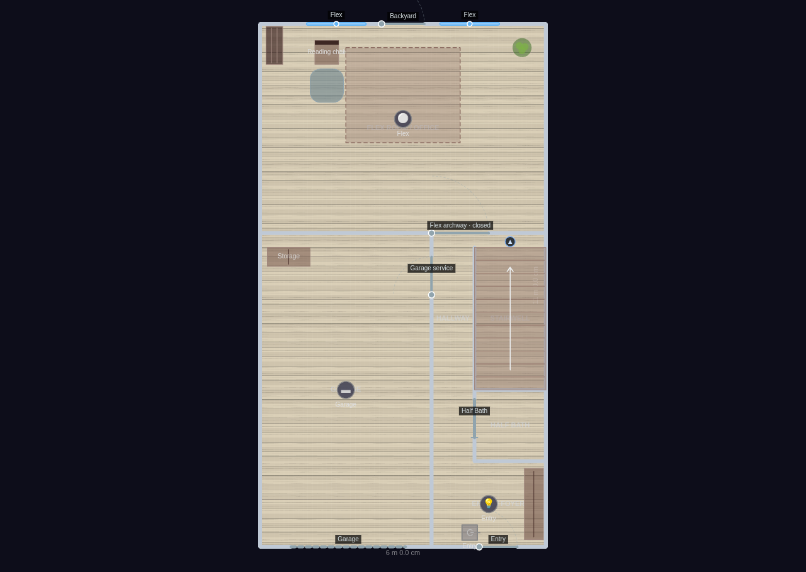
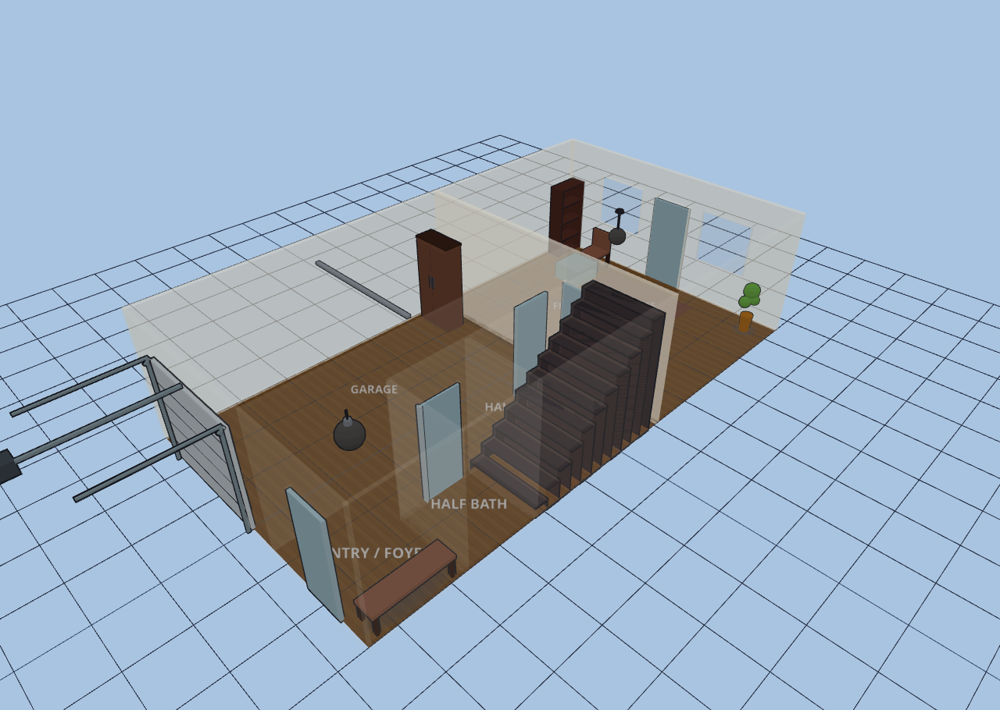
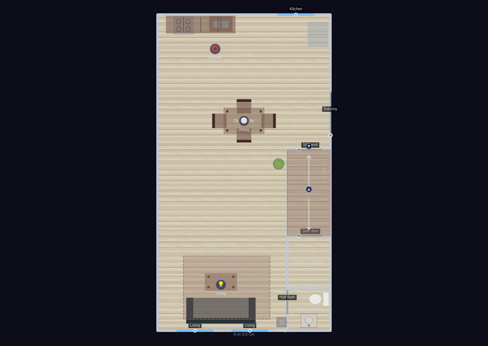
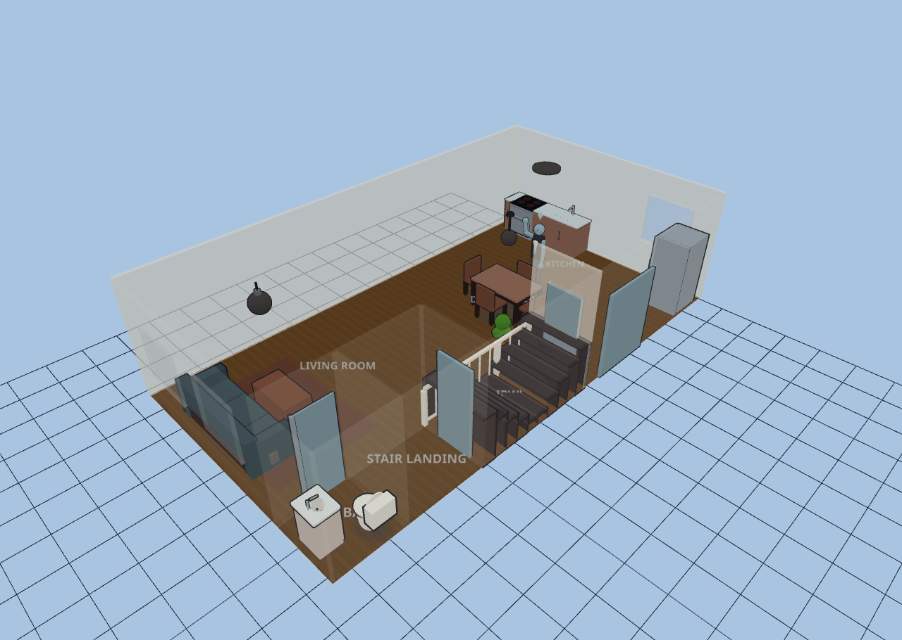
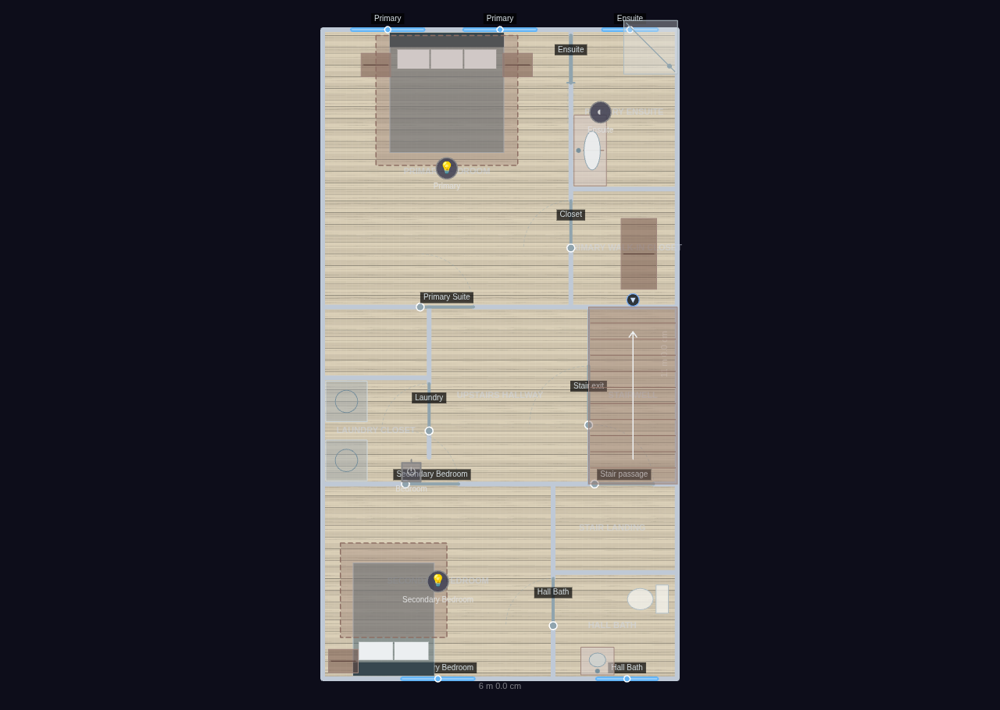
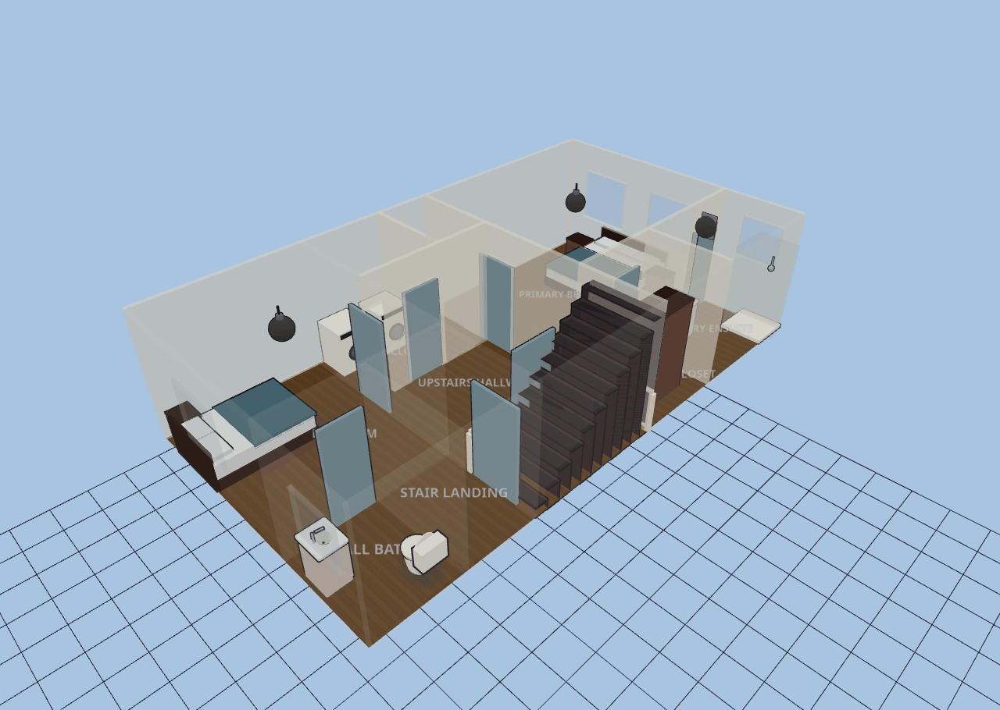
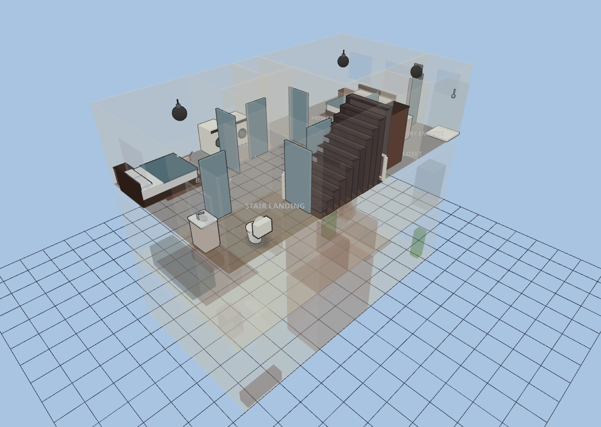

Townhouse — Minimalist
Explore it live above, or import the JSON in Diorama under Settings ▸ Data ▸ Configurations ▸ Import.
~1,875 sq ft (174 m²) heated + 256 sq ft garage · 3 floors · 21 rooms — minimalist edition
The same narrow three-storey townhouse shell and linked switchback stair core,
furnished the Scandinavian way: a deliberately small number of low, light-oak
pieces per level, a pale blond wood floor and crisp warm-white walls on every
floor, and a lot of intentional empty space. No clutter, no accent-heavy zones —
just the essentials, so the rooms read calm and the daylight from the front and
rear facades carries. One resident and a house cat roam the levels.
GROUND — Garage: single storage cabinet (no car). Entry: shoe bench. Flex Room /
Office: a single reading chair + ottoman and a bookshelf in the corner, plant,
one rug — the rest left open.
MIDDLE — Living Room: one low sofa + coffee table on a rug, a corner plant. Half
Bath off the landing. Dining Room: a compact four-seat table under a pendant.
Kitchen: a pared-back run (stove, sink, one counter, corner fridge) — no island.
TOP — Secondary Bedroom: bed + single nightstand + rug. Hall Bath: vanity + toilet.
Laundry Closet: stacked washer + dryer. Primary Bedroom: bed, two nightstands,
rug — nothing else. Primary Walk-in Closet: one wardrobe. Primary Ensuite: a
slim vanity + walk-in shower.
Shell detail inherited from the base townhouse: pocket doors on both half baths
and the primary ensuite, and a switchback pair of half-flights in the stair core.
Ground
6 rooms · 66 m² footprint


Middle
6 rooms · 66 m² footprint


Top
9 rooms · 66 m² footprint


Glass-house overview
